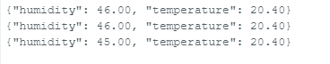
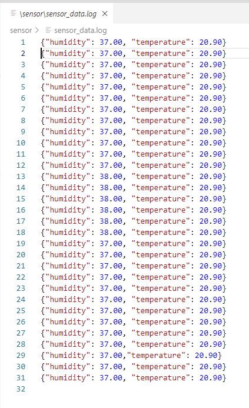
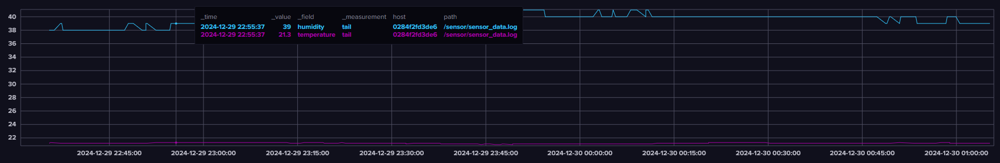

Temperature and Humidity Sensor
The Circuit
Oh boy! As someone who actively runs from physics, creating circuits was definitely a task I was dreading.
But fear not! If I can overcome my fear of building circuits and trying to recall what resistance and capacitance are (flashbacks to high school physics!), anyone can do it!
For this project, the DHT11 sensor caught my attention. Living in an apartment where I stubbornly refuse to open the door that provides ventilation and solely rely on the AC, I got curious about the humidity levels in my apartment throughout the year. I decided to log this data before investing in a dehumidifier.
Here's what the DHT11 Sensor looks like (it came with my Arduino Uno R3 kit):

This sensor is capable of taking temperature and humidity readings. There's a great library by Adafruit that makes it easy to interface with the sensor on an Arduino, along with sample code for quick setup. Check out the Adafruit Library here.
Circuit Setup
Using a breadboard to create the circuit was surprisingly easy! I placed the sensor at the end of the board, and the connections were simple to make. Here's the basic wiring for the DHT11:
1. VCC connects to the 5V pin on the Arduino.
2. GND connects to GND.
3. The DATA pin goes to a digital pin on the Arduino (usually D2).
This setup allows the Arduino to read temperature and humidity data from the sensor, which we can then send to a computer or other devices.
Circuit Setup Image
The following image shows the circuit created using the breadboard and Arduino (ignore Donald Duck in the background looking at it with disdain!)

1. The green wire is the data wire, which is attached to D2.
2. The red wire is the power, connected to the 5V pin of the Arduino.
3. The black wire is ground, connected to the GND pin of the Arduino.
The Arduino Code
This can be reviewed from the following source.
Pretty simple, import the library and establish what kind of data has to be sent over serial communication (in our case, JSON).
See the 'JSON' output below through serial output:

The Python
Before diving into the Python code, there was one important question on my mind:
- How will WSL2 or the Raspberry Pi (my prod/dev environment) communicate with the Arduino?
The answer came from something both my workplaces had drilled into me: Serial Communication.
The Arduino has a USB connector that allows it to communicate with the laptop or Raspberry Pi. Thanks to my previous experience, I already knew the library to use —pySerial— which made reading serial data a breeze. It's a great library for handling serial communication, and it worked flawlessly with the Arduino.
But then another challenge arose: What if I unplug and replug the USB device? How could I ensure the same device file is always created in the Linux environments?
This issue had been a concern at one of my previous workplaces, where we had simply accepted it as "just how things are, and we have a workaround." But at my new project, I found a simple solution: udev. By setting up udev rules, I was able to ensure the device file was consistently created every time the Arduino was connected, making my setup much more reliable (I added a symlink to /dev/arduino which would allow the serial connection client to always connect to the device). This rule file can be placed in /etc/udev/rules.d/ and udev has to be reload.
Udev Sample
Here is a sample below based off the vendor and product ID based off of my device (note: I use 99 as the prefix so that it's part of the last rules that are evaluated). The product and vendor IDs can be found using dmesg or lsusb.:
SUBSYSTEM=="tty", ATTRS{idVendor}=="xxxx", ATTRS{idProduct}=="xxxx", SYMLINK+="arduino"
WSL2 USB Quirk
For WSL2, there are some additional steps needed to read from the Arduino. See the following tutorial for an easy solution to install.
Python Code
After setting up the following above on the dev/prod environment, it was time to do something I was somewhat comfortable with, writing Python! The following components are part of the python code:
- Serial Connection: Responsible for connecting to the device, reading from it and populating a queue.
- Arduino Monitor: Responsible for emptying out the queue and populating the last response.
- Main: The driver code that performs the logging and reading from the monitor.
This code was packaged using setuptools and then is installed using pip.
There are some improvements that can be made to this code, like the following:
- The timeout specified for reads
- Passing in the device
- More robust data validation
- File Rotation
... and the list could go on and on for a self critic like myself :)
However, I wanted to put together something quickly since I was interested in taking the readings :) And below we achieved the following (hurray!):

See some of the source for some ideas.
The Docker
Getting flashbacks from my previous workplace, we were somewhat obsessed with InfluxDB and Telegraf.
Note that the code in the repository does not consist of environment files. These files contain sensitive information and therefore should be replaced by the user.
What is Telegraf???
Telegraf is an agent that collects, processes, and sends metrics and events from a variety of sources. It's configured with inputs and outputs, and it comes with a plugin ecosystem that can be defined in a configuration file. In our case, the output would be InfluxDB and the input has been set to be a file in a shared volume between the monitor container and the Telegraf container to read from.
What is InfluxDB???
Like any other database, InfluxDB is a time-series database optimized for storing and analyzing time-stamped data (metrics). The use case I am familiar with is collecting metrics. Surprisingly, InfluxDB2 comes with a builtin UI, perfect for looking at visualizations for our data (and no Grafana necessary)!
The Graph
Now that everything has come together, the data reading from the Arduino by WSL2 using Python, Telegraf tailing our log file that's in a shared volume and InfluxDB configured to receive data, we're ready to see our graphs and data!
Navigating on InfluxDB2 UI, I received the following graph after taking readings for around 30 minutes:
